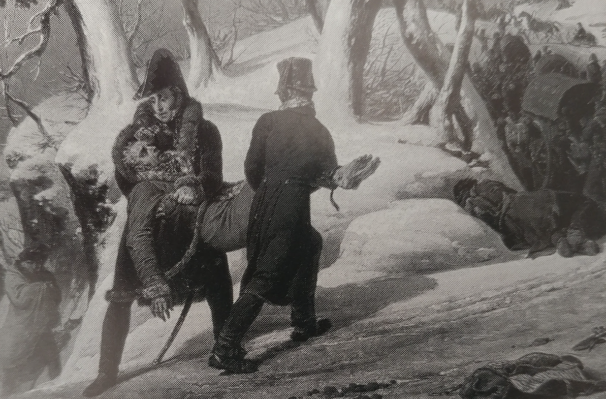
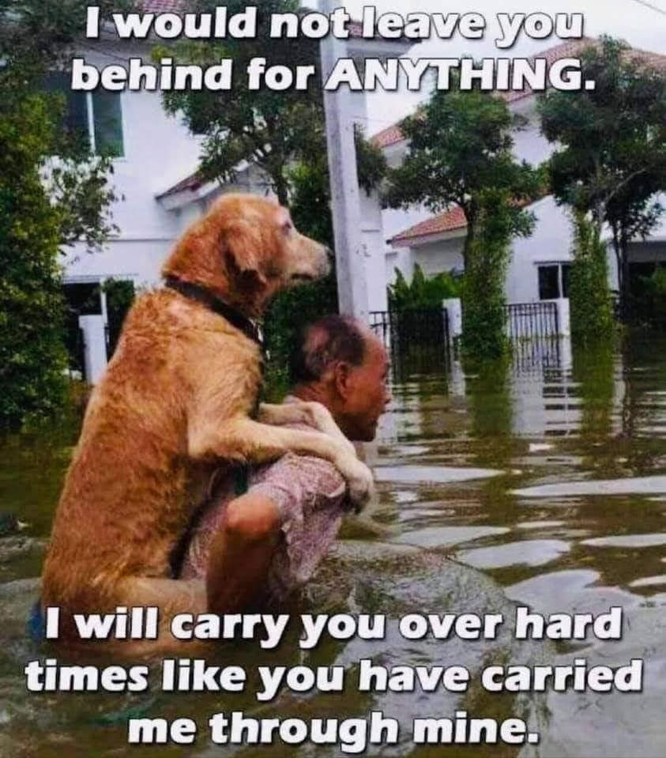
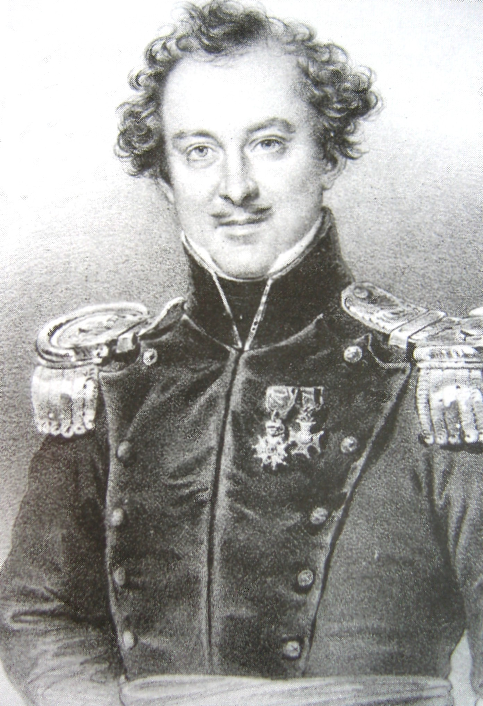
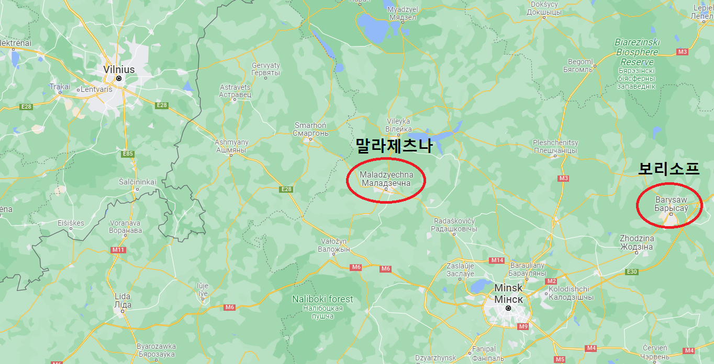

인간과 짐승 - 빌나로의 후퇴 (하)
게시: 2021-11-08T06:30:11+09:00
극한 상황에서의 동료들 간의 이런 헌신은 꼭 명령과 계급 의식에 의해서서만 일어나는 것은 아니었습니다. 또 르죈의 경험담입니다만, 길가에서 어떤 부상당한 포병 장교가 뒤쪽에서 자신의 하인이 따라오기를 기다리고 있는 것을 뭔가 임무를 띠고 대열 후미 쪽으로 가던 르죈이 보게 되었습니다. 그런데 2시간 정도 후에 그 임무에서 돌아오던 르죈은 똑같은 자리에서 그 포병 장교가 여전히 기다리고 있는 것을 보았습니다. 그래서 르죈은 여기서 주저앉아 있다가는 결국 얼어죽게 되니 하인은 포기하고 자신과 함께 길을 떠나자고 그 포병 장교를 설득하려 했습니다. 그러나 그 장교는 완강히 거부하며 이렇게 말했습니다. "장군님 말씀대로 전 죽을지도 모릅니다. 그러나 내 하인 조르쥬는 한 유모의 손에서 자란 친구입니다. 조르쥬는 내가 군에 입대한 뒤, 특히 부상을 당한 이후 제게 지극한 헌신을 보여주었어요. 아마 제 어머니도 제게 그렇게 해주지는 못했을 겁니다. 지금은 그 친구가 아픈 상황인데, 제가 그 친구에게 기다리고 있겠다고 약속했으니 저는 기다릴 겁니다. 그 약속을 어기느니 차라리 죽는 편이 낫습니다."

(나폴레옹의 참모 중 하나인 플라오(Charles de Flahault)가 비서인 봘로(Boileau)와 함께 그의 하인인 다비드(David)를 옮기는 장면입니다. 이건 그들의 목적지인 빌나 바로 외곽의 마지막 언덕에서 일어난 일이었는데, 이 언덕 기슭에서 다비드가 쓰러지자 그를 아꼈던 플라오가 언덕을 다시 내려와 그를 저렇게 끌고 갔습니다. 보면 그림 속 다비드가 맨발인데, 이는 그가 쓰러지자마자 다른 병사들이 그의 장화를 훔쳐갔기 때문입니다. 불행히도 다비드는 저 언덕을 다 올라가기도 전에 숨이 끊어졌다고 합니다. 이 그림은 플라오의 구술에 따라 화가 오라스 베르네(Horace Vernet)가 그린 것입니다.) 바이에른 출신의 기병대원인 드 뮈랄트(Albert de Muralt)는 대체로 병사들보다는 장교들의 생존률이 높았는데 이는 장교들이 도덕적으로 더 강인했고 지적인 교육을 더 많이 받았기 때문이라고 생각했습니다. 또 부르고뉴 하사는 오히려 남자들보다는 여자들이 이런 강추위와 굶주림을 더 잘 견뎠다고 적었습니다. 수석 군의관인 라리(Larrey)는 일반적인 선입견과는 달리 다소 추운 지방인 독일이나 네덜란드 출신 병사들보다는 오히려 남부 유럽 출신 병사들이 추위를 더 잘 견다는 편이었다고 관찰했습니다. 그러나 별로 연관성이 없어 보이는 그런 개별적인 관찰 결과는 페젠삭 대령의 남긴 기록을 보면 결국 소속된 집단에 대한 애착, 그리고 동료를 돕는 이타심이 많을 수록 생존 확률이 높았다고 결론을 내릴 수 있습니다. 페젠삭은 추위와 굶주림에 부대가 허물어져가는 모습을 보며 많은 병사들이 눈물을 흘렸는데, 그런 병사들일 수록 생존률이 높았고 또 그런 병사들은 먹을 것이 생기면 자신을 포함한 동료들과 나누어 먹었다고 기록했습니다. 그런 경향은 특히 크라스니 전투에서 네의 지휘 하에 러시아군을 뚫고 탈출했던 역전의 용사들인 제3 군단에서 두드러져서, 그들 중 상당수는 이런 와중에도 행군 시작을 알리는 북소리에 맞춰 가능한 한 오와 열을 지어 이동했다고 합니다. 이런 우정과 의리의 이야기는 곳곳에 넘쳐났는데, 그건 꼭 사람들 사이에서만 일어나는 것은 아니었습니다. 부르고뉴 하사는 후툇길 위에서 같은 연대 소속의 하사 하나가 '무통'(Mouton, 양이라는 뜻)이라는 이름의 연대 마스코트 격으로 키우던 푸들을 어깨 위에 떠매고 걷는 것을 보았습니다. 개의 발바닥도 당연히 동상에 걸리고 날카로운 얼음에 찔려 피투성이가 되었는데, 이 개가 걷지 못하게 되자 이 개를 아끼던 하사는 차마 개를 버리지 못하고 이렇게 떠매고 걸었던 것입니다. 당시 병사들은 정말 먹을 것이 부족하여 말은 물론이고 쥐, 개, 고양이 등 모든 것을 다 잡아먹고도 배가 고프던 상황이었는데도 그랬습니다. 이 개는 원래 1808년 스페인에 이 연대가 원정을 갔다가 현지에서 주운 개였는데, 이 개는 연대를 따라 아스페른-에슬링과 바그람까지 함께 했던, 정말 전우라고 할 수 있는 동료였기 때문에 이런 대접을 받았던 것입니다. 반대로 개들도 그런 극한 상황 속에서 주인에 대한 애정과 의리를 저버리지 않았습니다. 러시아군을 따라다니던 영국군의 윌슨 장군은 그랑다르메가 남기고 간 시체들 중에서 굶주린 개가 죽은 주인의 얼굴을 쳐다보며 슬프게 짖는 것을 흔하게 보았다고 적었습니다.

(최근에 인터넷에서 본 사진인데, 혹자에게는 이것이 우스운 사진일지 몰라도 개를 키워보신 분들이라면 저 주인의 심정이 어떨지 공감하시리라 믿습니다. 다들 아시겠지만 저 사진 속 캡션 내용은 이렇습니다. "어떤 일이 있더라도 너를 두고 가지는 않을거야. 난 너를 짊어지고 어려운 시절을 뚫고 가겠어. 내가 어려울 때 니가 내게 해준 것처럼 말이야.") 하지만 강추위가 몰아치는 후툇길이 이렇게 따뜻한 이야기로 가득할 리가 없었습니다. 개들은 죽은 주인을 그리워하며 함께 죽어갈지 몰라도, 사람은 개보다 훨씬 표독하고 생존 본능이 강한 동물이었습니다. 굶주림이 계속 되자, 일어나서는 안될 일, 즉 식인도 흔하게 일어났습니다. 굶주린 그랑다르메 병사들이 사람 고기를 먹는다는 이야기는 모스크바 후퇴 초기부터 러시아군의 보고에 종종 등장하는 이야기였습니다. 사실 모스크바 후퇴 초기라면 아직 식량이 남아있을 때였는데 왜 사람 고기를 먹는 일이 발생했을까요? 러시아군의 가혹한 포로 취급 때문이었습니다. 포로가 된 그랑다르메 병사들에게는 정말 아무런 먹을 것을 주지 않았기 때문에 사람들이 굶주림에 픽픽 죽어넘어졌고, 주변에 그렇게 굶어죽은 사람 시체 밖에 먹을 것이 없는 환경에서는 굶어죽기 일보 직전인 포로들이 그런 일을 저질렀던 것입니다. 골리친(Nikolai Galitzine) 장군이 그런 장면을 목격했다는 기록을 남긴 최초의 러시아측 인사인데, 이후로도 라에프스키 장군이나 코노브니친(Konovnitsin) 장군 등 많은 러시아군 장교들이 그런 목격담을 남겼습니다. 영국군 윌슨 장군도 사람 시체 일부를 구워먹는 프랑스군 병사들을 직접 두 눈으로 보았다고 적었습니다. 적군에 대한 과장되거나 근거없는 비방은 항상 있는 일이니까 그런 기록 모두를 믿을 수는 없습니다. 그러나 베레지나를 건넌 이후에는 그랑다르메 사람들의 기록에도 식인을 목격했다는 기록이 여러건 등장합니다. 그런 그랑다르메 측의 식인 목격담은 이미 오르샤(Orsha) 때부터 등장합니다. 폴란드 귀족 출신인 솔틱(Roman Sołtyk) 중위는 부대와 떨어져 낙오한 상태로 오르샤에 간신히 도착했는데, 나폴레옹의 엄명에 따라 낙오병인 솔틱 중위는 식량 배급을 받을 수가 없었습니다. 그런데 먹을 것을 찾아헤매던 솔틱은 오르샤 주변 마을에서 일단의 병사들이 뭔가를 작은 솥에 끓여먹는 것을 보고는 돈을 줄테니 한그릇 나눠달라고 부탁했습니다. 그러나 첫 숟갈을 먹자마자 뭔가 역한 기운을 느꼈는데 그 스튜 재료가 말고기냐고 묻자 병사들은 아무렇지도 않다는 듯 사람 고기인데 아직 솥 안에 남아있는 간 부분이 가장 먹기에 좋은 부위라고 대답했습니다.

(솔틱 중위는 당시 22세의 젊은 귀족이었습니다. 그는 나폴레옹 패망 이후 다시 러시아 손아귀에 떨어진 폴란드의 독립을 꿈꾸며 비밀 결사에 가입하여 활동하다가 1830년의 11월 반란에 준장으로 가담했습니다. 반란이 진압된 이후 그는 프랑스로 망명하여 53세의 나이에 생제르멩 앙 라예(Saint-Germain-en-Laye)에서 사망했습니다.) 그 외에도 시체를 먹는 병사들에 대한 목격담이 많습니다만, 반대로 그런 식인 행위는 결코 일어나지 않았다고 주장하는 사람들도 많았습니다. 다만 그런 사람들은 나폴레옹의 측근이었던 다뤼(Daru)나 마르보(Marbot), 구르고(Gourgaud) 등 고위급 인사들이었고 따라서 그런 사람들 주변에는 아직 먹을 것이 조금이라도 남아있었기 때문에 그랬을 것입니다. 자기가 직접 보지 않았다고 해서 그랑다르메 어느 곳에서도 그런 일이 없었다고 말하기는 어렵습니다. 쫄쫄 굶는 축에 속했던 부르고뉴 하사도 그런 소문을 많이 들었다면서, 솔직히 자신도 조금만 더 굶었다면 그렇게 사람 고기라도 먹었을 거라고 인정했습니다. 이런 상황 속에서도 이들이 전멸하지 않고 끝내 살아남을 수 있었던 것은 이들이 걷던 길이 7월에 러시아 내륙으로 진격할 때 갔던 길이 아니라서 그나마 부근 인가에 주민들과 먹을 것이 다소 있었으며 빌나의 마레(Maret)가 나폴레옹의 지시에 따라 그냥 앉아서 기다리지 않고 어떻게든 식량을 전방으로 보내왔기 때문입니다. 베레지나를 건넌지 5일 만인 12월 3일, 적어도 후퇴하는 그랑다르메의 맨 앞 부대들은 말라제츠나(Maladzyechna, 로마자 표기로는 Molodechno)에서 그랑다르메를 위한 보급창을 발견하고 허기를 달랠 수 있었습니다. 또한 여기까지는 러시아군의 코삭 기병들이 출몰하지 않았기 때문에 그동안 본국에서 오다가 발이 묶였던 가족들과 친구들의 편지가 여기서 다량으로 병사들의 손에 들어갔습니다. 이런 편지들은 살아남은 병사들에게 식량 못지 않은 큰 힘을 주었고, 그들의 생존 본능을 더욱 부각시켰습니다. 다음 날에도 이들은 마르코보(Markovo)에서 마레가 전방으로 보내는 중이던 보급품 호송대를 마주칠 수 있었는데, 여기에는 와인과 함께 빵과 치즈, 버터 등이 포함되어 병사들을 기쁘게 했습니다.

(말라제츠나는 원래 베레지나의 다리가 있던 보리소프와 빌나의 딱 중간 지점입니다. 말라제츠나는 지금도 인구 10만이 채 안되는 작은 도시입니다. 보리소프와 말라제츠나의 거리는 약 150km 정도로서, 이걸 5일만에 걸었다는 것은 그런 극한 상황에서도 하루에 30km 이상을 걸었다는 뜻입니다. 이것만 봐도 그랑다르메는 정말 대단한 군대라고 할 수 있습니다.)
그러나 마치 오징어 게임의 유리 징검다리와는 반대로, 맨 앞 줄에 선 병사들은 이런 행운을 누렸지만 뒤쪽에 섰던 병사들은 이런 혜택을 누리지 못했습니다. 운이 좋았던 앞줄의 병사들은 오랜만에 만난 음식에 절제를 못하고 먹고 마시며 급체와 설사에 시달리는 동안 뒷줄의 병사들은 기아와 식인 사이를 헤매야 했습니다. 이렇게 그랑다르메의 생존자들이 추위와 굶주림 속에서 허물어지는 동안, 러시아군은 무엇을 하고 있었을까요? 베레지나를 건넜다고 해서 프랑스군이 치외법권 지대로 들어간 것은 아니었을텐데, 추격을 포기했을까요? 또 러시아군이라고 해서 추위에 면역이 있었던 것도 아닐 것이고 스노우 타이어를 장착한 디젤 트럭이 있었던 것도 아닐텐데 이들은 그런 악조건을 어떻게 견뎠을까요? 이제 잠깐 시선을 러시아군에게 돌려보겠습니다. Source : 1812 Napoleon's Fatal March on Moscow by Adam Zamoyski
https://warandsecurity.com/2012/12/14/the-end-of-napoleons-russian-campaign/ https://en.wikipedia.org/wiki/Roman_So%C5%82tyk